정보처리산업기사 (2017-03-05 기출문제)
1과목: 데이터 베이스
1. 트랜잭션의 특성 중 트랜잭션 내의 모든 연산은 반드시 한꺼번에 완료되어야 하며, 그렇지 못한 경우는 한꺼번에 취소되어야 한다는 것은?
- consistency
- atomicity
- isolation
- durability
(정답률: 70%)

2. Which of the following is a language that enables users to access and manipulate data as organized by the appropriate data model?
- Data Definition Language
- Data Manipulation Language
- Data Control Language
- Host Language
(정답률: 75%)
3. 릴레이션에 있는 모든 튜플에 대해 유일성은 만족시키지만 최소성은 만족시키지 못하는 키는?
- 후보키
- 슈퍼키
- 기본키
- 외래키
(정답률: 60%)
4. STUDENT 릴레이션에 대한 SELECT 권한을 모든 사용자에게 허가하는 SQL 명령문은?
- GRANT SELECT FROM STUDENT TO PROTECT;
- GRANT SELECT ON STUDENT TO PUBLIC;
- GRANT SELECT FROM STUDENT TO ALL;
- GRANT SELECT ON STUDENT TO ALL;
(정답률: 67%)
5. 릴레이션에서 선택의 조건을 만족하는 튜플의 집합을 구하는 연산은?
- selection
- projection
- fork
- division
(정답률: 68%)
6. 속성(Attribute)의 수를 의미하는 것은?
- Degree
- Tuple
- Cardinality
- Domain
(정답률: 73%)
7. 노드의 수가 N개인 이진트리를 연결리스트로 표현한 경우 Null 포인터 수는?
- n+1
- n-2
- 2n+1
- n
(정답률: 53%)
8. 관계 해석에 대한 설명으로 틀린 것은?
- 튜플 관계 해석, 도메인 관계 해석 등이 있다.
- 원하는 정보가 무엇이라는 것만 정의하는 비절차적인 특징을 가지고 있다.
- 수학의 프레디켓 해석에 기반을 두고 있다.
- 관계 해석의 프로젝트 연산자 기호는 그리스 문자 시그마를 사용한다.
(정답률: 58%)
9. 제2차 정규형에서 제3차 정규형이 되기 위한 조건은?
- 부분 함수 종속 제거
- 이행 함수 종속 제거
- 원자 값이 아닌 도메인을 분해
- 결정자가 후보키가 아닌 함수 종속 제거
(정답률: 79%)
10. 다음은 무엇에 대한 설명인가?
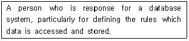
- Database Administrator
- End user
- Application programmer
- Agent
(정답률: 84%)
11. 후위표기식이 다음과 같을 때 연산결과는?
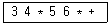
- 42
- 210
- 360
- 1800
(정답률: 77%)
12. 데이터베이스에서 뷰에 대한 설명으로 틀린 것은?
- 뷰는 기본테이블에서 유도되는 가상 테이블이다.
- 뷰를 제거하기 위해 DELETE 문을 사용한다.
- 필요한 데이터만을 뷰로 정의해서 처리할 수 있다.
- 뷰를 통해 데이터에 접근이 가능하기 때문에 데이터를 안전하게 보호할 수 있다.
(정답률: 82%)
13. 레코드 키 값을 여러 부분으로 분류하여 더하거나 XOR하여 주소를 구하는 해싱함수는?
- 제산법
- 개방주소법
- 폴딩법
- 제곱법
(정답률: 76%)
14. 개체-관계 모델의 E-R 다이어그램에서 속성을 의미하는 그래픽 표현은?
- 사각형
- 타원
- 마름모
- 삼각형
(정답률: 70%)
15. 삽입 정렬을 사용하여 다음의 자료를 오름차순으로 정렬하고자 한다. 2회전 후의 결과는?
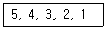
- 4, 5, 3, 2, 1
- 2, 3, 4, 5, 1
- 3, 4, 5, 2, 1
- 1, 2, 3, 4, 5
(정답률: 73%)
16. 데이터베이스 설계 단계 중 물리적 설계 단계와 거리가 먼 것은?
- 저장 레코드 양식 설계
- 스키마의 평가 및 정제
- 레코드 집중의 분석 및 설계
- 접근 경로 설계
(정답률: 63%)
17. A, B, C, D의 순서로 정해진 입력 자료를 스택에 입력하였다가 출력한 결과가 될 수 없는 것은?(단, 왼쪽부터 먼저 출력된 순서이다.)
- A, D, B, C
- A, B, C, D
- D, C, B, A
- B, C, D, A
(정답률: 70%)
18. 선형 자료구조가 아닌 것은?
- 스택
- 큐
- 트리
- 배열
(정답률: 82%)
19. 후위 표기 방식으로 표현된 수식이 다음과 같을 때 이 수식에서 가장 먼저 처리되는 연산은?
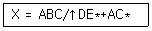
- A ↑ B
- B / C
- B ↑ C
- A * B
(정답률: 56%)
20. SQL 명령어 중 DDL에 해당하는 것은?
- SELECT
- UPDATE
- DELETE
- ALTER
(정답률: 80%)
2과목: 전자 계산기 구조
21. 가상기억장치에 관한 설명 중 가장 옳은 것은?
- 많은 데이터를 주기억장치에서 한 번에 가져오는 것을 말한다.
- 주기억장치보다 용량이 큰 프로그램을 실행하기 위해 보조기억장치의 일부를 주기억장치처럼 사용하는 개념이다.
- 데이터를 미리 주기억장치에 넣는 것을 말한다.
- 자주 참조되는 프로그램과 데이터를 모은 메모리이다.
(정답률: 76%)
22. 인터럽트 처리를 위한 우선순위 체제의 기능으로 가장 옳지 않은 것은?
- 인터럽트를 동시에 처리할 수 있도록 멀티인터럽트를 요청하는 기능
- 각 장치에 우선순위를 부과하는 기능
- 인터럽트를 요청한 장치의 우선순위를 판별하는 기능
- 우선순위가 높은 것을 먼저 처리할 수 있는 기능
(정답률: 71%)
23. 2진수 1110.110을 10진수로 변환하면?
- 14.⑤
- 14.25
- 14.55
- 14.75
(정답률: 63%)
24. 하드웨어의 특성상 주기억장치가 제공할 수 있는 정보전달의 능력 한계를 무엇이라 하는가?
- 주기억장치 전달폭
- 주기억장치 대역폭
- 주기억장치 접근폭
- 주기억장치 정보전달폭
(정답률: 67%)
25. 다음 그림과 같은 명령 형식을 사용하는 컴퓨터에서 사용 가능한 메모리 참조 명령의 개수는 몇 개인가?
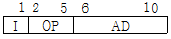
- 8
- 16
- 24
- 32
(정답률: 52%)
26. AND 연산을 이용하여 어느 비트(문자)를 지울 것인가를 결정하는 자료는?
- CARRY(캐리)
- 플립플롭
- 패리티(parity)비트
- 마스크(mask)비트
(정답률: 65%)
27. 8진법의 수 256과 542를 더한 값은?
- (798)8
- (1000)8
- (1020)8
- (A20)8
(정답률: 65%)
28. n bit의 레지스터 A(An-1An-2…A1A0)와 B(Bn-1Bn-2…B1B0)에 대해 다음의 마이크로 오퍼레이션(micro-operation)을 n번 수행하였다. 이 마이크로오퍼레이션의 기능으로 가장 적합한 것은?(단, shr은 오른쪽 시프트(right shift), cir은 오른쪽 회전 시프트(rotate right)이다.)
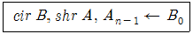
- A의 내용을 B로 병렬 전송(parallel transfer)
- B의 내용을 A로 직렬 전송(serial transfer)
- A와 B의 내용을 교환
- B의 내용을 2로 나눈 나머지를 A에 저장
(정답률: 57%)
29. MAR(Memory Address Register)의 역할을 가장 옳게 설명한 것은?
- 수행되어야 할 프로그램의 주소를 가리킨다.
- 메모리에 보관된 내용을 누산기에 전달하는 역할을 한다.
- 고급 수준 언어를 기계어로 변환해 주는 일종의 소프트웨어이다.
- CPU에서 기억장치 내의 특정 번지에 있는 데이터나 명령어를 인출하기 위해 그 번지를 기억하는 역할을 한다.
(정답률: 64%)
30. 입출력 장치와 주기억장치 사이의 데이터 전송을 담당하는 입출력 전담 장치는?
- 콘솔 장치
- 터미널 장치
- 상태 레지스터 장치
- 채널 장치
(정답률: 71%)
31. 다음이 설명하고 있는 것은?
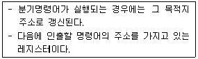
- 누산기
- 인덱스 레지스터
- MAR
- 프로그램 카운터
(정답률: 46%)
32. 다음 논리회로의 출력함수식 F를 가장 옳게 표현한 것은?
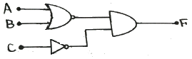
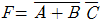
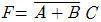
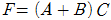
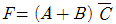
(정답률: 60%)
33. 주소버스의 위치를 지정하기 위한 단방향 신호 회선으로 메모리 용량이 256Kbyte이면 어드레스 버스선의 수는 몇 bit인가?
- 17 bit
- 18 bit
- 26 bit
- 32 bit
(정답률: 61%)
34. 다음 ( )안에 알맞은 것은?(단, NOT은 고려하지 않는다.)
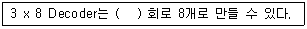
- NOR
- OR
- NAND
- AND
(정답률: 50%)
35. 산술 및 논리 연산을 실행하는데 사용되는 레지스터는?
- 누산기
- 데이터 레지스터
- 주소 레지스터
- 인덱스 레지스터
(정답률: 74%)
36. 중앙연산처리장치에서 마이크로 동작(Micro-operation)이 순서대로 일어나게 하는 데 필요한 신호는?
- 실행 신호
- 순차 신호
- 제어 신호
- 타이밍 신호
(정답률: 41%)
37. 여러 개의 CPU(중앙처리장치)를 가지고 동시에 다수 작업을 처리하는 개념은?
- Multiprocessing
- Multiprogramming
- Multiaccessing
- Multitasking
(정답률: 62%)
38. 임의 접근(random access)이 가능하지 않은 것은?
- 자기 테이프(magnetic tape)
- 자기 드럼(magnetic drum)
- 자기 디스크(magnetic disk)
- 자기 코어(magnetic core)
(정답률: 64%)
39. 기억 장치를 여러 모듈로 나누고, 한 번지(Address) 액세스 시에 다음에 사용할 번지를 미리 액세스하여 처리 속도를 향상시키는 접근 방법은?
- 인터리빙
- 페이징
- 세그먼팅
- 스테이징
(정답률: 54%)
40. 명령어 사이클(Instruction Cycle)에 해당하지 않는 것은?
- Fetch Cycle
- Control Cycle
- Indirect Cycle
- Interrupt Cycle
(정답률: 58%)
3과목: 시스템분석설계
41. 해싱에서 동일한 버킷 주소를 갖는 레코드들의 집합을 의미하는 것은?
- Chaining
- Collision
- Division
- Synonym
(정답률: 67%)
42. 코드설계과정을 순서대로 옳게 나열한 것은?
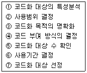
- ⑦ → ③ → ② → ⑤ → ⑥ → ① → ④
- ⑦ → ③ → ⑤ → ② → ⑥ → ① → ④
- ③ → ② → ⑦ → ⑤ → ⑥ → ① → ④
- ⑦ → ① → ② → ⑤ → ⑥ → ③ → ④
(정답률: 51%)
43. IPT기법의 적용 목적으로 가장 거리가 먼 것은?
- 개발자의 생산성 향상
- 프로그래밍의 표준화 유도
- 효율적이고 신뢰성 높은 프로그램 개발
- 프로그래머 충원 용이
(정답률: 70%)
44. 컴퓨터 입력 단계에서의 체크 중 프로그램에 상한값이나 하한값을 넣어 두고, 이것을 입력된 수치와 비교해서 체크하는 방법은?
- 숫자 체크
- 범위 체크
- 일괄합계 체크
- 대차 체크
(정답률: 62%)
45. 시스템 운용 기간이 다음과 같을 때, MTTR을 계산한 결과는?
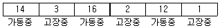
- 2
- 8
- 14
- 16
(정답률: 48%)
46. 문서화의 목적으로 가장 거리가 먼 것은?
- 시스템 보안성의 향상을 기대할 수 있다.
- 개발 후 시스템 유지보수를 용이하게 한다.
- 시스템 개발부서에서 운용부서로 인계 및 인수가 용이하다.
- 시스템 개발 중 추가 변경에 따른 혼란을 방지할 수 있다.
(정답률: 73%)
47. 13자리로 구성된 주민등록번호의 코드 체크 방식은?
- Balance Check
- Check Digit Check
- Echo Check
- Parity Check
(정답률: 71%)
48. 객체 지향 분석에서 동적 모델링(dynamic modeling) 과정에 주로 작성되는 다이어그램은?
- 객체 다이어그램(object diagram)
- 상태 다이어그램(state diagram)
- 자료 흐름도(data flow diagram)
- 구조 다이어그램(structure diagram)
(정답률: 35%)
49. 코드설계 후 설계의 기본 사항을 바꾸지 않고 코드 부여 대상의 신규발생, 변경, 폐지에 대응할 수 있는 코드의 성질을 의미하는 것은?
- 명확성
- 용의성
- 확장성
- 중복성
(정답률: 58%)
50. 색인순차파일(Index Sequential File)에서 데이터 레코드 중의 key 항목만을 모아서 기록하는 인덱스 부분에 해당하지 않는 것은?
- Master Index
- Cylinder Index
- Track Index
- Data Index
(정답률: 66%)
51. 다음과 같은 특징을 갖는 출력 매체 시스템은?
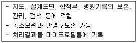
- COM
- OCR
- MICR
- Soft Copy
(정답률: 56%)
52. 시스템의 기본 요소 중 입력된 데이터를 처리 방법과 조건에 따라 처리하는 것을 의미하는 것은?
- Control
- Process
- Feedback
- Output
(정답률: 65%)
53. 시스템 개발 단계 중 가장 마지막 단계에 수행해야 하는 것은?
- 업무 분석 및 요구사항 정의
- 코딩
- 테스트 및 디버깅
- 프로그램 설계
(정답률: 77%)
54. 코드의 각 자리수가 다음과 같은 의미로 구성된 코드는?
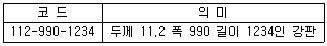
- 블록(block) 코드
- 분류(classification) 코드
- 표의(significant) 코드
- 순차(sequence) 코드
(정답률: 56%)
55. 코드 앞자리 2글자는 학과, 그 다음 4자리는 입학년도, 다음 3자리는 일련번호와 같이 부여되는 코드는?
- 구분 코드
- 그룹 분류 코드
- 일련번호 코드
- 기호 코드
(정답률: 54%)
56. 코드화의 기능이 아닌 것은?
- 오류정정 기능
- 암호화 기능
- 표준화 기능
- 분류 및 식별 기능
(정답률: 57%)
57. 2개 이상의 파일에서 조건에 맞는 것을 골라 새로운 레코드로 파일을 만드는 방법은?
- 병합
- 추출
- 합병
- 조합
(정답률: 50%)
58. 자료 사전에서 사용되는 표기 기호 중 자료의 생략에 사용되는 기호는?
- ( )
- #
- &
- !
(정답률: 70%)
59. 사원 번호의 발급 과정에서 둘 이상의 서로 다른 사람에게 동일한 번호가 부여된 경우에 코드의 어떤 기능을 만족시키지 못한 것인가?
- 표준화 기능
- 식별 기능
- 배열 기능
- 연상 기능
(정답률: 73%)
60. 출력 정보의 내용 설계 시 고려할 사항으로 가장 거리가 먼 것은?
- 출력 항목의 문자표현 방법 결정
- 출력 형식 결정
- 출력 항목에 대한 집계 방법 결정
- 출력 정보의 오류검사 방법 결정
(정답률: 34%)
4과목: 운영체제
61. 운영체제가 보조 기억장치의 관리를 위해서 하는 일 중 가장 옳지 않은 것은?
- 기억 장소의 할당
- 응용 프로그램 유지보수
- 사용 가능 공간의 관리
- 디스크 스케줄링
(정답률: 58%)
62. Round-Robin 스케줄링에 대한 설명으로 틀린 것은?
- 프로세스들이 배당, 시간내에 작업을 완료되지 못하면 폐기된다.
- 프로세스들이 중앙처리장치에서 시간량에 제한을 받는다.
- 시분할 시스템에 효과적이다.
- 선점형(preemptive) 기법이다.
(정답률: 56%)
63. UNIX 운영체제에서 사용자가 운영체제와 대화하기 위한 기반을 제공하는 프로그램으로 명령어를 해석하고, 오류의 원인을 알려주는 역할을 하는 것은?
- 커널(Kernel)
- 쉘(Shell)
- 시스템 호출(System call)
- 응용(Application) 프로그램
(정답률: 65%)
64. 운영체제의 기능에 대한 설명으로 가장 거리가 먼 것은?
- 컴퓨터를 초기화시켜 작업(job)을 수행할 수 있는 상태로 유지시키는 역할을 한다.
- 컴퓨터 자원을 여러 이용자가 나누어 사용할 수 있도록 자원을 관리한다.
- 하드웨어와 사용자 사이에 내부 및 외부 인터페이스를 제공한다.
- 소프트웨어나 하드웨어에 오류가 발생하면 운영체제는 회복을 위해 어떤 일도 할 수 없다.
(정답률: 72%)
65. 다음 프로세스에 대하여 HRN 기법으로 스케줄링 할 경우 우선순위로 옳은 것은?
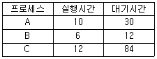
- B → C → A
- C → A → B
- B → A → C
- A → B → C
(정답률: 54%)
66. 디렉토리 구조 중 중앙에 마스터 파일 디렉토리가 있고, 그 아래에 사용자별로 서로 다른 파일 디렉토리가 있는 구조는?
- 1단계 디렉토리 구조
- 2단계 디렉토리 구조
- 비순환 그래프 디렉토리 구조
- 일반적 그래프 디렉토리 구조
(정답률: 64%)
67. 다음 중 절대로더(Absolute loader)의 설명으로 가장 옳은 것은?
- 주기억장치에 적재할 때 사용 여부에 따라 적당한 곳에 적재한다.
- 번역기에 의해 생성된 기계어로 된 프로그램과 서브루틴 라이브러리에 있는 루틴들을 서로 조합한다.
- 기계언어로 프로그램을 미리 지정한 곳에 적재한다.
- 어떤 컴퓨터가 마치 다른 컴퓨터처럼 기능을 갖게 할 수 있는 기술을 말한다.
(정답률: 39%)
68. 교착상태가 발생할 수 있는 조건이 아닌 것은?
- 점유 및 대기(hold and wait) 조건
- 비선점(non preemption) 조건
- 상호 배제(mutual exclusion) 조건
- 진행(progress) 조건
(정답률: 61%)
69. 프로세스의 정의로 가장 옳지 않은 것은?
- 프로세서에 할당되어 실행 될 수 있는 개체
- 프로그램이 활성화 된 상태
- 하드웨어에 의해 사용되는 입출력 장치
- 동시에 실행될 수 있는 프로그램들의 집합
(정답률: 57%)
70. 세마포어에 대한 설명으로 가장 옳지 않은 것은?
- Dijkstra는 교착상태에 대한 문제를 세마포어 개념을 이용하여 해결하였다.
- 세마포어에 대한 오퍼레이션들은 소프트웨어나 하드웨어로 구현 가능하다.
- 이진 세마포어는 오직 0과 1의 두 가지 값을 가지며, 산술 세마포어는 0과 양의 정수를 값으로 가질 수 있다.
- 프로세스 사이의 동기를 유지하고 상호 배제의 원리를 보장할 수 있다.
(정답률: 34%)
71. Process의 3가지 상태에 해당하지 않는 것은?
- Ready
- Block
- Running
- Indexing
(정답률: 53%)
72. 디스크 스케줄링 기법 중 탐색 거리가 가장 짧은 요청이 먼저 서비스를 받는 기법은?
- FCFS 스케줄링
- SSTF 스케줄링
- SCAN 스케줄링
- C-SCAN 스케줄링
(정답률: 64%)
73. 기억장치 배치전략이 아닌 것은?
- best-fit
- first-fit
- worst-fit
- small-fit
(정답률: 75%)
74. UNIX에 대한 설명으로 옳지 않은 것은?
- 다양한 유틸리티 프로그램들이 존재한다.
- 멀티 유저, 멀티 태스킹을 지원한다.
- 2단계 디렉토리 구조의 파일 시스템을 갖는다.
- 대화식 운영체제이다.
(정답률: 58%)
75. 다음과 같은 작업이 제출되었을 때, SJF 정책을 사용하여 스케줄링 할 경우 평균 Turnaround Time을 계산한 결과로 옳은 것은?
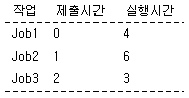
- 6.33
- 6.67
- 7
- 7.5
(정답률: 42%)
76. 구역성(Locality) 이론에 대한 설명으로 가장 옳지 않은 것은?
- 구역성 이론은 시간(temporal) 구역성과 공간(spatial) 구역성으로 구분할 수 있다.
- 공간 구역성 이론은 기억장소가 참조되면 그 근처의 기억장소가 다음에 참조되는 경향이 있음을 나타내는 이론이다.
- 구역성이란 실행중인 프로세스가 일정 시간 동안에 참조하는 페이지의 집합을 의미한다.
- 일반적으로 공간 구역성의 예는 배열순례(Array-Traversal), 순차적코드의 실행 등을 들 수 있다.
(정답률: 53%)
77. 프로세스별로 보호 대상과 권한의 목록을 유지하는 것으로, 접근 행렬에서 행의 내용을 하나의 리스트로 묶어서 구성하는 자원 보호 기법은?(오류 신고가 접수된 문제입니다. 반드시 정답과 해설을 확인하시기 바랍니다.)
- Lock Key
- Access Control Matrix
- Access Control List
- Capability List
(정답률: 46%)
78. 분산 환경에서 멀티벤더(multi vendor)의 자원을 연결하여 이용하게 하는 소프트웨어로서 각종 어플리케이션에 대한 표준 인터페이스를 제공하는 개념은?
- 분산운영체제
- 네트워크 운영체제
- 3-tiered 시스템
- 미들웨어
(정답률: 38%)
79. 강결합(Tightly-coupled) 시스템과 약결합(Loosely-coupled) 시스템에 대한 설명으로 가장 옳지 않은 것은?
- 약결합 시스템은 각각의 시스템이 별도의 운영체제를 가진다.
- 강결합 시스템은 각 프로세서마다 독립된 메모리를 가진다.
- 강결합 시스템은 하나의 운영체제가 모든 처리기와 시스템 하드웨어를 제어한다.
- 약결합 시스템은 메시지를 사용하여 상호 통신을 한다.
(정답률: 52%)
80. 기억장치관리에서 반입(fetch)기법에 대한 설명으로 가장 옳지 않은 것은?
- 주기억장치에 적재할 다음 프로그램이나 데이터를 언제 가져올 것인가를 결정하는 문제이다.
- 반입 기법에는 요구 반입(demand fetch) 기법과 예상 반입(anticipatory fetch)기법이 있다.
- 요구 반입 기법은 새로 반입된 데이터나 프로그램을 주기억장치의 어디에 위치시킬 것인가를 결정하는 방법이다.
- 예상 반입 기법은 앞으로 요구될 가능성이 큰 데이터 또는 프로그램을 예상하여 주기억장치로 미리 옮기는 방법이다.
(정답률: 47%)
5과목: 정보통신개론
81. 전송 효율을 최대한 높이려고 데이터 블록의 길이를 동적으로 변경시켜 전송하는 ARQ방식은?
- Adaptive ARQ
- Stop-And-Wait ARQ
- Selective ARQ
- Go-back-N ARQ
(정답률: 61%)
82. TCP/IP 모델에서 인터넷 계층에 해당되는 프로토콜은?
- SMTP
- ICMP
- SNA
- FTP
(정답률: 53%)
83. 위성통신에서 호 접속 요구가 발생할 때만 회선을 할당하는 방식은?
- 고정 할당 방식
- 임의 할당 방식
- 접속 요구 할당 방식
- 주파수 할당 방식
(정답률: 62%)
84. 정보통신시스템의 구성 요소에 해당되는 용어가 잘못 표기된 것은?
- DTE : 데이터 단말장치
- CCU : 공통신호 장치
- DCE : 데이터 회선종단 장치
- MODEM : 신호변환 장치
(정답률: 55%)
85. 광섬유 케이블에서 클래딩(Cladding)의 주역할은?
- 광신호를 전반사
- 광신호를 증폭
- 광신호를 흡수
- 광신호를 전송
(정답률: 68%)
86. 각종 사물에 컴퓨터 칩과 통신 기능을 내장하여 인터넷에 연결하는 기술은?
- IoT
- PSDN
- ISDN
- IMT-2000
(정답률: 71%)
87. OSI 7계층 모델에서 기계적, 전기적, 절차적 특성을 정의한 계층은?
- 전송 계층
- 데이터링크 계층
- 물리 계층
- 표현 계층
(정답률: 71%)
88. 데이터 터미널과 데이터 통신기기의 접속 규격에 해당하는 것은?
- V.21
- V.23
- V.24
- V.26
(정답률: 43%)
89. 반송파로 사용되는 정현파의 주파수에 정보를 실어 보내는 디지털 변조방식은?
- FM
- DM
- PSK
- FSK
(정답률: 51%)
90. ATM 셀의 헤더 길이는 몇 [byte] 인가?
- 2
- 5
- 48
- 53
(정답률: 66%)
91. 이동통신 시스템에서 이동체의 움직임에 따라 수신 주파수의 세기가 변하는 현상은?
- 동일 채널 간섭
- 페이딩 현상
- 열잡음 효과
- 도플러 효과
(정답률: 46%)
92. 다중접속 방식이 아닌 것은?
- FDMA
- TDMA
- CDMA
- XDMA
(정답률: 59%)
93. 변조의 개념을 옳게 설명한 것은?
- 디지털신호를 아날로그 신호로 변환하는 것이다.
- 전송된 신호를 저주파신호성분과 고주파신호성분으로 합하는 것이다.
- 제3고조파 신호를 변환하는 것이다.
- 전송하고자하는 신호를 주어진 통신 채널에 적합하도록 처리하는 과정이다.
(정답률: 53%)
94. 8진 PSK에서 반송파간의 위상차는?
- π
- π/2
- π/4
- π/8
(정답률: 51%)
95. 라우팅(Routing) 프로토콜이 아닌 것은?
- BGP
- OSPF
- SMTP
- RIP
(정답률: 50%)
96. 203.230.7.110/29의 IP 주소 범위에 포함되어있는 네트워크 및 브로드캐스트 주소는?
- 203.230.7.102 / 203.230.7.111
- 203.230.7.103 / 203.230.7.254
- 203.230.7.104 / 203.230.7.111
- 203.230.7.1⑤ / 203.230.7.254
(정답률: 43%)
97. IEEE802.6으로 공표된 분산형 예약방식의 프로토콜은?
- FDDI
- DQDB
- QAM
- LAN
(정답률: 39%)
98. HDLC 프레임 구조에 포함되지 않는 것은?
- 플래그(Flag) 필드
- 제어(Control) 필드
- 주소(Address) 필드
- 시작(Start) 필드
(정답률: 69%)
99. L2 스위치의 기본 기능이 아닌 것은?
- Address Learning
- Filtering
- Forwarding
- Routing
(정답률: 44%)
100. 샤논의 이론을 적용하여 채널의 대역폭(W)이 3.1[kHz]이고, 채널의 출력 S/N 이 100일 경우 채널의 통신용량(C)은 약 몇 bps 인가?
- 20640
- 20740
- 20840
- 20940
(정답률: 28%)